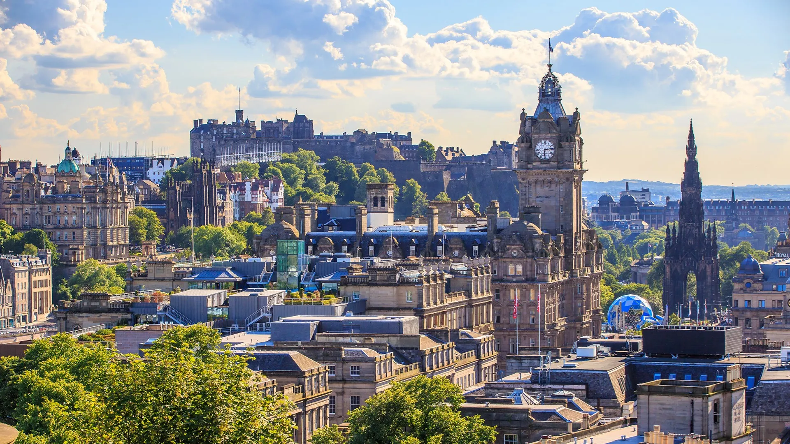

SCOTLAND

Scotland is a country that forms part of the United Kingdom, located in the northern part of the Island of Great Britain. Known for its rich history, stunning landscapes, and vibrant cultural heritage. Scotland offers a diverse tapestry of experiences for visitors and residents alike. The capital city, Edinburgh, is nestled amid the rolling hills and set against the dramatic backdrop of Arthur's Seat, Edinburgh is a city of contrasts. It's historic Old Town, with its narrow alleys and medieval buildings, stands in stark contrast to the Georgian elegance of the New Town. Dominating the skyline is the Edinburgh Castle, perched above castle rock, offering panoramic views of the city. Edinburgh is renowned for its world-famous festivals, including the Edinburgh Festival Fringe, which attracts performers from around the world. The Royal Mile, a bustling thoroughfare connecting the castle to Holyrood Palace, lined with shops, and street performers, creating a lively atmosphere. Scotland with its rich cultural heritage, breathtaking landscapes, and a lively arts scene. Scotlands natural beauty is highlighted by its rugged Highlands, serene lochs (lakes), and picturesque coastline. The country is renowned for its historic castles, its traditions like the Highland games, bagpipe music, and kilts contributing to its unique cultural charm. Golf, and tartan are integral parts of Scottish heritage, reflecting a proud and resilent nation with a deep connection to its past.